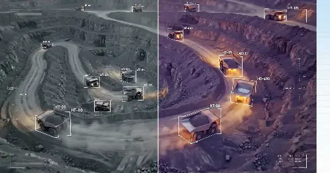
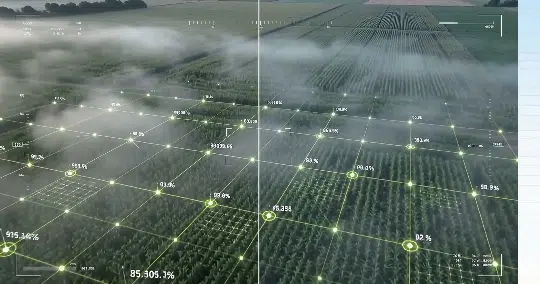
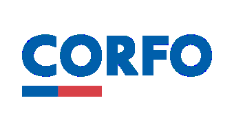

Los riesgos se mueven rápido.
Nosotros los vemos venir.
Plataforma de vigilancia territorial autónoma con drones VTOL e inferencia Edge AI a bordo. Cerramos la brecha nocturna de 10 horas detectando actividad humana no autorizada y precursores térmicos antes de la ignición — optimizando el gasto en patrullaje terrestre hasta en un 40% y evitando el despliegue millonario de aviones de combate al amanecer.
La brecha nocturna que cuesta US$130M al año Fuente: CORMA Dato oficial Corporación Chilena de la Madera (CORMA): Gasto consolidado anual de la industria y el Estado en combate y prevención de incendios forestales en Chile.
El 99,7% de los incendios forestales son causados por el ser humano. La aviación tripulada combate de día, pero por seguridad y normativa DGAC no vuela de noche. Cuando el viento y el riesgo de intencionalidad son más altos, el cielo queda vacío y las camionetas en tierra no tienen visibilidad en el bosque profundo.
Centrales de Operaciones
Incertidumbre constante. Cuando los satélites reportan calor, el foco ya ha alcanzado escala incontrolable.
Información fragmentadaEmpresas & Propietarios
Riesgo permanente de pérdidas patrimoniales catastróficas en madera, biomasa e infraestructura productiva.
Pérdidas millonariasBrigadistas en Terreno
Exposición extrema a emboscadas, cortes de camino o accidentes al ingresar de noche a ciegas por caminos de ripio, con menos del 12% de visibilidad efectiva fuera de la huella.
Riesgo vital innecesarioSatélites sufren latencia orbital; torres fijas tienen puntos ciegos orográficos; las patrullas en camioneta 4x4 solo ven lo que tocan sus focos en el camino; y los aviones cisterna quedan en tierra al atardecer por seguridad. Athene es el centinela aéreo nocturno que detecta la fogata o el precursor antes de que nazca el incendio, evitando el despliegue millonario de aeronaves de combate al amanecer.
Por Qué las Soluciones Tradicionales Fallan de Noche
Análisis técnico comparativo entre satélites de órbita baja, torres térmicas fijas, vigilancia tripulada convencional y la plataforma autónoma Athene.
| Dimensión Operativa | Satélites LEO FIRMS / OroraTech |
Torres Térmicas Fijas Mástiles Ópticos |
Vigilancia Tripulada Avionetas Diurnas + Cuadrillas/Drones |
Nuestra Arquitectura
Strig Systems
Athene (VTOL Noctua-01 + Edge AI) |
|---|---|---|---|---|
| Patrullaje Nocturno Continuo | Pasos orbitales discretos (1 a 4 h). Estándar macrocontinental indiscutido de día, pero con ventana ciega crítica durante la noche. | Continuo 24/7 de alta confiabilidad, pero estrictamente limitado a la línea de vista directa (LOS) de su cuenca visible. | Inoperante de noche. Los aviones cisterna y de coordinación quedan en tierra al atardecer por normativa DGAC/VFR nocturno (riesgo de colisión contra el relieve CFIT). En tierra, las camionetas 4x4 sufren fatiga, lentitud en ripio y nula visibilidad fuera del camino. | Patrullaje autónomo programado en las 10 horas de vulnerabilidad nocturna con aeronave VTOL Noctua-01 y estación de acople. |
| Latencia de Detección & Alerta | 30 a 90 minutos (descarga orbital, procesamiento en la nube y distribución de alertas a centrales). | Instantánea en sensor óptico; requiere operador humano 24/7 en central para verificación y filtrado de falsas alarmas. | Instantánea para el piloto u operador local; demorada hacia la central de despacho si no existe cobertura 4G/5G en la quebrada o predio. | < 5 segundos (Inferencia Edge AI local a bordo + radioenlace táctico de telemetría de largo alcance). |
| Detección de Precursores (Humanos / Vehículos) | 0% (Resolución espacial de 375m a 1km. Diseñado para incendios activos, incapaz de ver personas o fogatas). | Nula en senderos boscosos densos o bajo dosel arbóreo fuera del ángulo visual del mástil. | Severamente limitada. Las avionetas no vuelan de noche para detectar campamentos o fogatas tempranas; las patrullas en camioneta solo vigilan caminos habilitados, dejando el interior ciego. | Detección óptica/térmica de presencia humana y vehículos antes de la ignición (causa del 99,7% de los incendios). |
| Puntos Ciegos Topográficos | Afectado por nubosidad baja, humo denso e inversión térmica que absorben la radiación infrarroja. | Crítico: Puntos ciegos físicos insalvables tras cerros, quebradas y laderas opuestas. | Crítico. Las cuadrillas terrestres no tienen visibilidad tras cerros ni en quebradas profundas; las aeronaves diurnas sufren con nubosidad baja y humo denso. | Mapeo adaptativo: Vuelo autónomo por debajo del techo nuboso, perfilando quebradas y laderas sin sombra topográfica. |
| Riesgo Humano & Apalancamiento Operativo | Cero exposición humana directa. | Cero exposición humana directa (salvo mantenimiento en cumbres aisladas). | Alto riesgo vital & Ratio 1:1: Requiere 1 piloto + 1 observador certificado por aeronave. Peligro de accidentes aéreos en vuelo rasante sobre relieve agreste, y cuadrillas terrestres expuestas en caminos forestales aislados en horario nocturno crítico. | Cero exposición & Multiplicador 1:N: Misión, despegue y aterrizaje 100% autónomos desde estación de acople. Un solo operador táctico C2 supervisa hasta 5 cuadrículas de vuelo automatizado simultáneamente. |
| Modelo Económico & Estructura de Costo | Suscripción SaaS (US$15k-$60k/año). Accesible para escala macro; no sustituye la vigilancia táctica. | Altísimo CAPEX: US$40k-$100k por torre instalada (mástil, óptica militar, energía solar y caminos de acceso). | Costos Desarticulados: Extinción diurna masiva: US$2.000-$3.500/hora de vuelo (aviones cisterna y helicópteros). Patrullaje terrestre nocturno: ~US$6.400/mes por camioneta 4x4 (2 vigilantes 7x7 + combustible + arriendo) con menos del 12% de cobertura predial. | Intelligence as a Service (IaaS): Suscripción modular (~US$7.500/mes por base Nest Alpha en temporada de riesgo). ~40% menor costo que patrullas 4x4 terrestres, 100% de cobertura en quebradas y prevención activa que ahorra decenas de miles de dólares en combate aéreo al amanecer. |
Vigilancia Territorial con Inteligencia A Bordo
Arquitectura autónoma de alta disponibilidad. La aeronave VTOL detecta, clasifica y georreferencia en el borde sin requerir enlace continuo a internet ni servidores en tierra.

Gimbal Biespectral Noctua-Optics
Payload giroestabilizado de 3 ejes con sensor microbolómetro LWIR radiométrico no refrigerado (640×512) y cámara óptica diurna 4K. Identificación térmica precisa en oscuridad total con algoritmo de discriminación multi-frame (<5% falsas alarmas).
Inferencia Edge AI Zero-Cloud (NVIDIA Jetson)
Cómputo a bordo basado en arquitectura NVIDIA Jetson (Orin Nano Super) con pipeline cuantizado FP16 acelerado por NVIDIA TensorRT sobre JetPack SDK / ROS2. Ejecución local de visión computacional y modelos multimodales ligeros para clasificación y validación de amenazas en tiempo real (<40 ms), operando con autonomía total Zero-Cloud en zonas sin internet ni señal celular.
Telemetría Táctica en Zonas Desconectadas
Emisión de fichas de alerta y coordenadas exactas en menos de 5 segundos vía radioenlace táctico FHSS 915 MHz (>20 km LOS con Link Margin >6 dB), garantizando enlace de telemetría ininterrumpido más allá del perímetro físico de patrulla sin dependencia celular.

Aeronave VTOL & Hoja de Ruta de Ingeniería
Plataforma de validación VTOL 4+1 lift+cruise (2,1 m de envergadura) en transición hacia la célula propietaria industrial Noctua-01. Diseñada para despegue y aterrizaje vertical independiente de pista, hasta 90 min de autonomía, crucero de ala fija de alta eficiencia, envolvente de viento de 45 km/h (24 kt) y radio operacional seguro de 15 km (cobertura de clústeres de hasta 50.000 ha por estación).
Georreferenciación Quirúrgica
Proyección angular instantánea hacia el terreno asistida por posicionamiento centimétrico RTK/GNSS de alta precisión, calculando coordenadas exactas para el despacho inmediato de brigadas.
Operación Segura & Marco DGAC
Diseñada bajo estándares de ingeniería aeroespacial. Arquitectura 4+1 lift+cruise con tolerancia a pérdida de motor sustentador, paracaídas balístico pirotécnico autónomo y protocolos operacionales bajo marco DAN 151 / DAN 91 (DGAC Chile) para BVLOS segregado con retorno automático ante contingencia (Auto-RTH).
Cómo se cierra el circuito táctico en zonas sin señal celular
El 80% de los predios forestales y cordilleranos son zonas oscuras de conectividad. Athene opera sin depender de torres 4G/5G mediante radioenlaces tácticos bilaterales directos.
Cuadrilla 4x4 en Terreno
Receptor táctico de cabina emite alarma acústica y coordenadas GPS directas. La cuadrilla confirma recepción y retroalimenta el estado de intercepción vía enlace directo FHSS.
Receptor Táctico & Retorno TácticoAeronave VTOL (Nodo Central Aéreo)
La aeronave procesa el espectro térmico en tiempo real con NVIDIA Jetson a bordo. Emite telemetría táctica simultánea hacia la cuadrilla y la central, y recibe comandos de misión y acuse de recibo en tiempo real.
Inferencia Edge AI BilateralEstación Base Nest & Central C2
La estación base sincroniza telemetría completa vía satélite Starlink hacia la central de despacho del cliente (GIS / Webhook), permitiendo monitoreo global y reasignación dinámica de vuelo.
Gateway Satelital C2 BidireccionalPrograma Piloto para Empresas del Sector
Estructurado en 4 fases metodológicas para empresas forestales, mineras, utilities e instituciones que buscan verificar en terreno la efectividad de la vigilancia nocturna.
Levantamiento & Topografía
Mapeo de predios prioritarios, modelado de zonas ciegas y calibración de rutas según la probabilidad histórica de focos.
Calibración Sensorial
Pruebas en terreno de firmas térmicas, validación de telemetría táctica en zonas sin cobertura y simulacros controlados.
Vigilancia Nocturna Activa
Patrullaje autónomo programado en las horas de mayor vulnerabilidad con telemetría en vivo y soporte al C2 del cliente.
Auditoría & Retorno Operativo
Informe técnico con tiempos de respuesta, falsas alarmas filtradas, horas de vuelo ahorradas e integración auditada con el centro de operaciones (C2) del cliente.
Calculadora de Retorno Operativo Territorial
Modelo Intelligence as a Service (0 CAPEX). Compara el costo del patrullaje terrestre nocturno en camionetas 4x4 (Fuente: estándares de faena forestal en Chile) frente al despliegue autónomo de estaciones Nest Alpha durante la temporada crítica de 5 meses (noviembre a marzo), sumado al ahorro en horas de aviones cisterna al amanecer.
Condiciones y Compromiso del Modelo Intelligence as a Service
Estructurado para que las empresas del sector incorporen vigilancia aérea nocturna sin adquirir activos fijos ni asumir pasivos operacionales.
0 CAPEX & Cero Pasivo de Flota
La empresa no compra drones ni asume depreciación de aeronaves. Se contrata disponibilidad operativa por temporada de riesgo forestal como gasto operacional (OPEX).
Mantenimiento & Soporte Técnico Integral
Recambios preventivos de hélices, baterías, sensores y actualización de modelos de IA a bordo gestionados directamente por el equipo de ingeniería de Strig Systems.
Gestión de Cumplimiento DGAC
Operación conducida bajo protocolos de seguridad operacional conforme a normativa DAN 151 / DAN 91 para operaciones BVLOS segregadas y zonas de contingencia.
Convocatoria de Validación 2026
Cupos limitados por temporada de incendios en la Macrozona Centro-Sur. Evaluación de factibilidad territorial e interoperabilidad C2 sin costo para predios forestales e industriales.
I+D Aplicada y Alianzas Estratégicas
Combinamos ingeniería aeroespacial rigurosa con validación en el mercado real, respaldados por las instituciones líderes en innovación y transferencia tecnológica.

Proyecto Semilla Inicia CORFO💼 Inversionistas & Fondos Deep Tech
Apertura a conversaciones con fondos de capital de riesgo enfocados en robótica aérea, dual-use, mitigación climática y tecnologías de defensa territorial.
🔬 Centros de Investigación & Academia
Cooperación técnica en visión computacional nocturna, algoritmos de detección en humo denso y modelos aerodinámicos de alta eficiencia.
🏛️ Agencias Públicas & Municipalidades
Modelos de colaboración B2G para protección de comunidades en la interfaz urbano-forestal y optimización de presupuestos de emergencia.
Ingeniería Aeroespacial & Operaciones Tácticas
5 ingenieros civiles aeroespaciales de la Universidad de Concepción, combinando diseño aeronáutico, visión computacional, combate de incendios en primera línea y certificación aeronáutica.
Tomás Medina
CEO & Co-founderIngeniero Civil Aeroespacial • Visión Computacional, Machine Learning, CAD/CAM e Ingeniería de Sistemas C4ISR.
Carlos Gutiérrez
Co-founderBombero Operativo • Ingeniero Civil Aeroespacial. Análisis CFD, logística operacional y arquitectura de interfaz táctica.
Ananda Glaria
Co-founderIngeniera Civil Aeroespacial • Integración y ensayos de vuelo RPAS, CAD, análisis estructural (FEA) y CFD.
Richard Solís
Co-founderIngeniero Civil Aeroespacial • Ingeniería de sistemas, aseguramiento normativo, control de calidad y certificación aeronáutica.
Pablo Alarcón
Co-founderIngeniero Civil Aeroespacial • Arquitectura de sistemas, lógica e integración de flujo de datos, validación y verificación.
Dr. Alejandro López T.
Senior AdvisorPhD Space Systems Engineering and Management. Asesor senior en arquitectura de sistemas espaciales y escalamiento aeroespacial.
Coordinemos una Evaluación Territorial
Si representas a una empresa con activos territoriales de alto valor, un consorcio de respuesta a emergencias o un fondo de inversión, nuestro equipo técnico responderá directamente tu requerimiento.